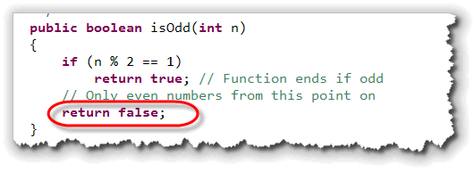
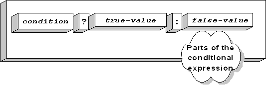
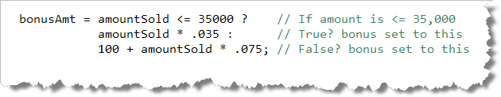

In the last chapter you learned how to write
procedures and functions. In this chapter you learned how to
use the if statement and how to make more
complex desicions using the logical operators and nested
conditions.
In this section, we want to marry those two concepts together, and learn how to write predicate (or logical) functions. These are similar to the problems you'll see on your CS 170 programming proficiency quizzes.
We'll start by looking at the concept of selection in the context of writing your own functions. Then, we'll look at a shortcut Java operator, called the conditional or selection operator, that can be used to write predicate expressions, without first writing a predicate function.
Functions and Selection
With procedures, it really doesn't matter (syntactically) if you
always have two alternatives. If you use a simple if
statement, then when the condition is true, the
actions in the body of the statement are executed; when the
condition is false then nothing happens.
With a function, though, it's possible to have a return
statement inside of an if statement. If you do that,
though, you have to return a value in each and every case:
when your condition is true and when
your condition is false. That means that functions
using if can have several different
return statements, as long as every single
branch leads to a return.
Let's look at a simple example.
The isOdd() Function
You can tell if an integer is odd by using the remainder
operator. If the remainder of the number divided by 2 is 1,
then the number is odd. We can put that algorithm
into a function like this:
 Notice that:
Notice that:
isOdd()is a predicate function. That is, it has abooleanreturn type.- The function has one parameter,
nwhich is the number to test. - If the remainder of the number divided by 2 is 1, we
return
true, just like we said.
So why is the compiler complaining?
The answer is very simple, yet it is one that students frequently
struggle with. A function must return a value for each and
every path through the code. This function returns a value
when the number n is odd. What does it do when the number is
even?
Nothing!
Three Solutions
There are several different ways to fix this problem. The
way that we've been doing it in class (and the classical
solution), is to create a result variable
at the top of your function, modify result
as necessary inside your if statement,
and then return result at the very
end of your function. That way you only have one exit
from your function.
If you want to skip the result variable and
use the multiple-return style, then here are three
solutions that will work:
- You can add an
elseclause for the case when the number is even like this:

- Since the
returnstatement ends the function when the number is odd (inside theifstatement body), any code following it is only executed when the number is even. That means you really don't need anelse; you can just write this:

Boolean Return Values
The third alternative is a little harder to explain, but you
should make the effort to understand it. Often, the best
way to implement a predicate function is to avoid using
if statements at all, and simply return the
result of the Boolean expression. Let me explain how that
works.
Assume that we take the test expression inside the if
statement, and store it inside a boolean variable.
Once we do that, the variable (result) will
contain true if the number is odd and false
if the number is even.
Then, we can simply return that boolean variable,
instead of the literal values, true or false,
like this:

Of course, we really don't need the variable result,
do we? Instead, we can just return the Boolean expression
result like this:
 This is a fairly standard way to write a predicate function.
This is a fairly standard way to write a predicate function.
The Conditional Operator
One problem with using
if—else is that you can't use an
if—else in a formula or
expression;
if—else is a statement; it does
not produce a value. That means, you must create an additional
variable, like bonusPcnt in the earlier example.
Java's, conditional operator provides a way to use an
if-else condition inside an expression.
The conditional operator is sometime called the ternary,
or teriary operator, because it is the only operator
to require three operands. It's also sometimes known as the
selection operator, since it selects from two values:

The operands of the conditional operator are:- The condition or test expression: This must be
some expression that evaluates to a
booleanvalue. - The true result: If the condition portion is
true, then the whole expression takes on the value listed in this clause. This value can be of any type. - The false result: If the condition portion is
false, then the whole expression takes on the value listed here. This value can also be of any type, but should match the type of thetrueresult.
The condition is separated from the results portion by a
question mark ( ? ). The results are separated from each
other by a colon ( : ).
Using the conditional operator, we could calculate
bonusAmt, used in the example from the end of
Section 6.3—Introducing Selection, like
this:

This example has been formatted so that each operand used by the conditional operator appears on a separate line, but that's not required. Here's the WageCalculator example once again,
this time using the conditional operator to calculate
the value for grossPay:
 You'll have to decide whether you find this clearer or
not. I think that I prefer the
You'll have to decide whether you find this clearer or
not. I think that I prefer the if-else instead.
You can also nest another conditional expression (using the conditional operator) inside the true or false portions of a first conditional expression. This quickly becomes unreadable, however, and, despite what you might think, may even execute more slowly. You should attempt to write source code that is clear and to-the-point, not code that uses the fewest possible lines.

Predicate Functions Summary
- Predicate functions are functions that return a
booleanortrue/falsevalue. You can call predicate functions to supply the condition portion of anifstatement, or use them to initialize abooleanvariable. - When you write a function, remember that all execution paths
must return a value. That means if you
return trueorreturn falseinside anifstatement, then you must be sure to return somethind when the condition is not true. - The conditional operator (sometimes called the
selection operator) allows you to create an
expression that employs
if-elselogic. The conditional operator has three operands: the condition to test, the value to use if the condition istrueand the value to use if the condition isfalse. The two conditions are separated with a colon, and the condition is followed by a question mark.